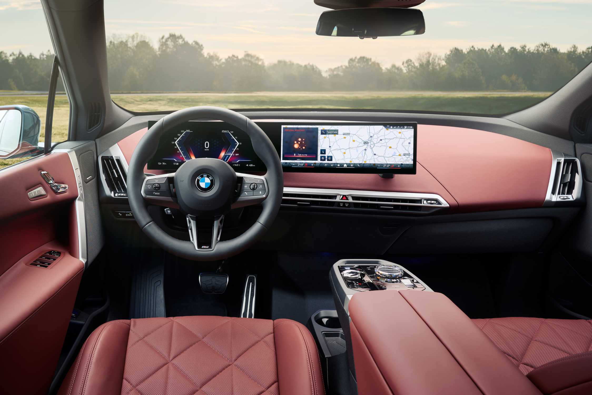
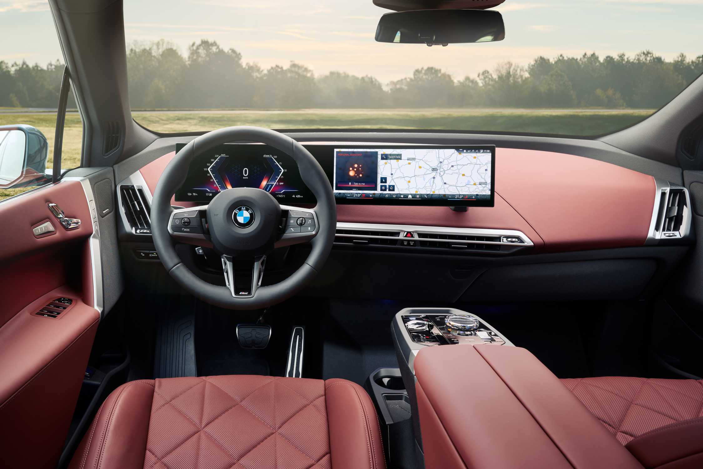

Strong performance from every drive system.
In each of the three model versions of the new BMW iX, a re-tuning
of the drive system and optimized power electronics result in
noticeably spirited power delivery. The new BMW iX xDrive45
delivers a maximum system output 402 hp, which enables a 0-100
km/h time of just 5.1 seconds. The new BMW iX xDrive60 receives a
20 hp increase over the previous xDrive50 to 536 and accelerates
from 0 to 100 km/h in only 4.6 seconds. Both models have an
electronically limited top speed of 200 km/h.
At the very top of the iX line, the new BMW iX M70 xDrive offers
genuinely exhilerating performance. The dual motors in the iX M70
xDrive combine to deliver a maximum system output of up to 650 hp
in My Mode Sport - 40 more than its M60 xDrive predecessor - and a
maximum torque of 811 lb-ft when Launch Control is activated. The
new BMW iX M70 xDrive sprints from 0 to 100 km/h in 3.8 seconds,
on to an electronically limited top speed of 250 km/h when
equipped with performance tires.
Interior: Progressive luxury, refined sportiness.
The interior ambience of the BMW iX, characterized by generous
space and progressive luxury, can now be combined with the sporty
design features of the M Sport Package. New M Multifunction Seats
offer enhanced lateral support and a striking design. Available
for the first time in the iX, these seats offer a wide range of
adjustments, including backrest width adjustment, lumbar support,
and pronounced contouring in the thigh and shoulder areas. A new
microfibre/Sensatec upholstery finished in Atlas Grey/Black with
M-specific stitching and accents in the BMW M tricolour is
exclusive to the iX M70. The new M Multifunction Seats are also
optionally available in Amido natural leather and Castanea natural
leather.
The Heat Comfort Package (optional on xDrive45 and xDrive60,
standard on M70 xDrive) contributes to maximum well-being. Heated
surfaces for the instrument panel and glove compartment, the door
panels, centre armrest and the rear seats ensure a comfortable
temperature for all passengers. The Sky Lounge Panoramic Glass
Sunroof, optional on xDrive45 and xDrive60 and standard on the M70
xDrive, enhances the bright and spacious interior with a one-piece
viewing area that extends over both rows of seats. Instead of a
roller blind, it features electrochromic shading that can be
activated at the touch of a button. The Bowers & Wilkins Diamond
Surround Sound System, with 30 speakers and exciters in the front
seats, delivers an exceptionally intense and precisely balanced
sound experience. A Trailer Hitch will be available as an option
for the new BMW iX in the summer of 2025. For all model variants,
the maximum permitted towing capacity is 1,587 kg.
 

Wide variety of systems for automated driving and parking.
To optimize comfort and safety, the new BMW iX offers a wide range
of systems for automated driving and parking. These are based on
BMW's latest modular technology kit and set new standards in terms
of functionality, reliability, and availability. The advanced
modular technology kit gives the new BMW iX outstanding
intelligence in environmental monitoring and data processing. It
also offers the potential for extensive integration of new and
enhanced functions. These updates and enhancements can be
installed over-the-air via remote software upgrades or downloaded
from the BMW ConnectedDrive Store. This means that the BMW iX and
its software remain conveniently at the cutting edge of
technology.